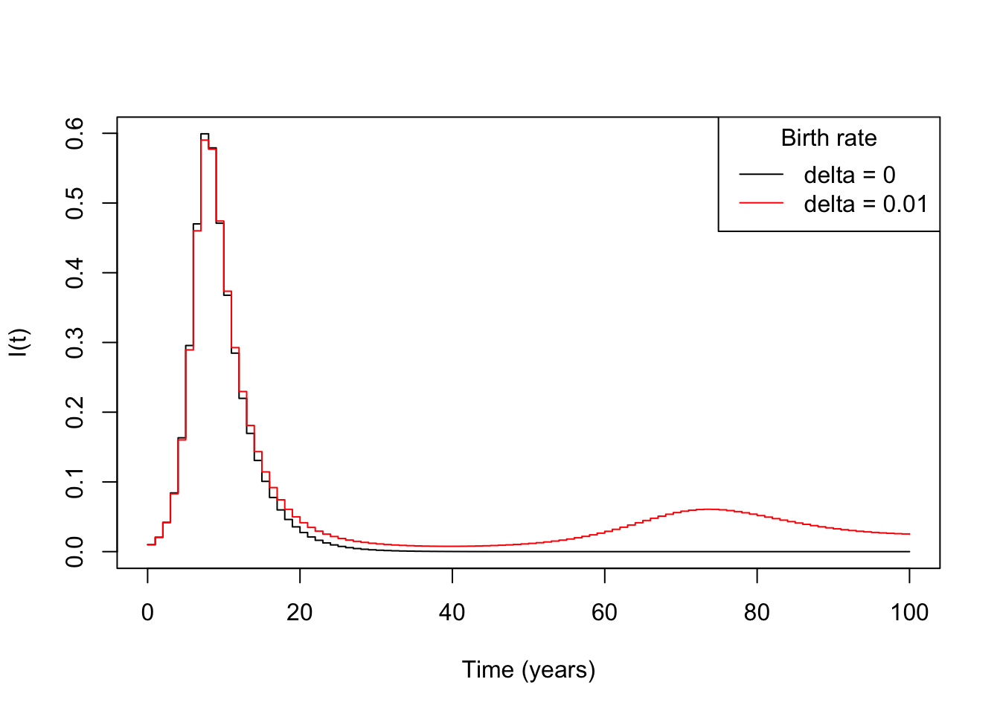

Adapt the SIR model in the slides to incorporate birth of new susceptibles proportional to the sum of the S, I, and R populations. Balance these new births with deaths from each of the S I and R groups, with both the per capita birth and death rates being delta=0.01
Answer:
new_sir <-function(t, y, parms){ S <- y[1] I <- y[2] R <- y[3] beta <- parms["beta"] gamma <- parms["gamma"] delta <- parms["delta"] out <-c(-beta*y[1]*y[2] + delta*sum(y) - delta*S, beta*y[1]*y[2] - gamma*y[2] - delta*I, gamma*y[2] - delta*R)return(out)}new_parms <-c(beta =1.3, gamma =0.23, delta =0.1)time_sir <-seq(0,20,by=1)y_sir <-matrix(data =NA, ncol =3, nrow =length(time_sir))y_sir[1, ] <-c(0.99, 0.01, 0)for (i in2:nrow(y_sir)){ y_sir[i,] <- y_sir[i-1,] +new_sir(time_sir[i], y_sir[i-1, ], new_parms)}plot(x = time_sir, y = y_sir[,2], ylim =c(0,1))
B.2 Visualising for the whole population
Calculate N(t) = S(t) + I(t) the total number of alive individuals. Make a plot of S(t), I(t), R(t) and N(t). Your function N(t) should be constant at 1 for all values of t. If this is not the case, ensure the model contains births of new S proportional to N, and deaths of each of S, I, and R.
Answer:

B.2.(a) At approximately what time does the peak in infectious population occur and what proportion of the population is infectious?
Answer: After 8 days, the proportion infectious is approximately 0.54
B.2.(b) Approximately how long does it take for the susceptibles to go to 0?
Answer: The susceptible population does not go to 0, due to the birth of new susceptibles
B.3 Discussion
Discuss what happens to the population of S, I, and R over time. Consider the parameters of the model, what they represent, and whether the assumptions they represent are realistic.
Answer:
S(t): The population decreases to a minimum at about 9 days but the birth of new susceptibles prevents it reaching 0. It will continue to increase to a stable equilibrium.
I(t): The population increases to a peak and then the recovery process causes the population to decrease. The infectious population does not decrease down to 0 as before as the new susceptibles will get infected. The long-term behaviour is a stable equilibrium.
R(t): The recovered population increases to a peak and then decreases to a stable equilibrium as the recovered population die and are replaced with susceptibles. There’s an implicit assumption in the model that transmission is not passed to newborns; i.e. only susceptibles are born. This is likely a reasonable assumption to make for many diseases. As we are dealing the proportion of the total population it’s reasonable to keep N(t) constant, but the birth and death rates may not be reasonable. Instead, we might be best to allow them to grow indefinitely (or, if the death rate is higher, decrease to 0).
Additionally, we assume that the entire population is capable of giving birth to newborns, and that the disease does not cause a loss of life expectancy.